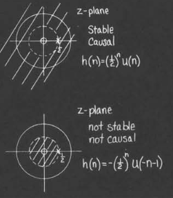
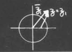

z变换
离散时间傅里叶变换的局限性与z变换介绍
傅里叶变换对于一部分序列并不收敛
例如$X(\omega)=\sum x(n)e^{-j\omega n}$我们需要其收敛,需要判断其条件
可以使用三角不等式,最终会得到前者收敛的条件为$\sum |x(n)|<\infty$(绝对可和)
我们之前所讨论的稳定性,可以得到一个稳定系统中的$H(\omega)$是绝对可和的
一个例子
对于$x(n)=2^nu(n)$,我们能够注意到$\sum x(n)=\infty$,因此傅里叶变换不收敛
根据一个非常常用的结论,假如我们有一个(模)指数下降的序列,那么其傅里叶变换必然收敛
因此我们可以采用类似于处理拉普拉斯变换的方法,乘以一个指数下降的数列
如果我们选取一个$r>2$,那么我们能够得到一个收敛的序列$x(n)r^{-n}$
z变换定义
与傅里叶变换的联系之处在于
对于某些$r$值,z变换会收敛,对于某些$r$值,其并不会收敛
如何处理
这里视频中有许多,但我认为只需要将整个模长保持在小于1的部分,那么我们就可以绘制出一个收敛圆
特别地,如果收敛圆包含了单位圆,那么我们可以知道这个序列的离散傅里叶变换也是收敛的同时,我们也要注意到,对于不同的$u(n)$情况,会有不同的收敛域
在这里讨论的极点是使用求和公式求出来的结果,而对于不同的条件下,其可能是零点,也有可能是极点
收敛域的一些性质
- 收敛的范围总是被限制在极点和(0/$\infty$)
- 对于有限长的序列,收敛域为$0<|z|<\infty$
- 右侧序列($n$有下界),那么$|z|$有下界
- 左侧序列($n$有上界),那么$|z|$有上界
- 两侧序列($n$无界),那么有$R_{x-}<|z|<R_{x+}$
下面展示了一个判断傅里叶变换是否存在的例子
而对于两侧序列的判定,我们可以参考
其可以被视作两侧序列,而$|z|$的收敛范围是$(\frac{1}{2},2)$
z变换的性质
我们仍然可以得到一些像卷积定理的内容
我们也可以通过$z$变换的过程得到信号序列的一些性质
- 如果信号序列是稳定的,那么单位圆必然在收敛域中
- 如果信号序列是关联的,那么必然是一个右侧序列
使用线性差分方程表示的例子
我们需要使用一些好用的性质
我们可以得到一个代数方程,得到
这里和那拉普拉斯变换解微分方程如出一辙
同时我们需要注意到,这里的收敛域会随着序列中$n$条件的变化而变化(如图所示)

z反变换
z反变换可以从$X(z)$得到$x(n)$
直接观察法
例如
这样的序列,我们可以直接从z反变换的结果反推出原本的过程
注意,这里需要讨论$|z|$的范围(改变$n$的范围)
暴力展开
例如对于$X(z)=\frac{1}{1-az^{-1}}$的反变换,我们可以有这个式子的展开
我们可以看到,这里对应于$n>0$或者$n<0$的情况,两者有着不同的展开
但是这种方法我们只能得到一系列的式子,我们还要将其综合起来
部分分式展开
考虑一个一般有理函数
其中$x_k$为$Q$的零点,而$R_k$为留数
为了讨论方便,我们假定分母次数更高,并且没有重根
这里使用了一些留数定理的内容
可以使用两种不同的方法(视作$z$和$z^{-1}$)
下面展示了一个例子
但是这种方法只适用于分式的情况,因此不能广泛地使用(但是在讨论一些性质的时候非常有用)
路径积分法
我们直接给出结论
($C$环路为包含原点的边缘在收敛域内的环路)
这个公式的证明实际上来自于$n$阶导的柯西公式
在实际计算的时候需要使用留数定理计算($X(z)z^{n-1}$)的留数
一个简单的例子
我们以$X(z)=\frac{1}{1-\frac{1}{2}z^{-1}}$
其具体的做法如下
可以看出来,对于$n>0$的情况,计算要显得方便的很多,但是$n<0$的话,可以考虑使用变量代换的方式计算
不过我觉得直接继续用留数定理的公式还是方便的
一些结论以及重要的注意事项
- 我们讨论的时候强调上面的次数要小于下面的次数,这里体现出关联性(否则就会有$z$的正数次项留出来)
- 对于前面讨论的着一种情况,我们需要小心在环路积分之余,可能会有单独留出来的项
- 展开的时候经常会犯迷糊,记得把式子展开为$a_nz^{-n}$的形式,其中注意$z$的符号
z变换的相关性质
频率响应的几何意义
卷积性质
对于$y(n)=x(n)*h(z)$,我们可以得到z变换$X(z)H(z)=Y(z)$
同时,我们也可以得到,在单位圆上的z变换就是傅里叶变换
作为一个例子,我们请出我们的老朋友$H(z)=\frac{z}{z-a}$,
进一步,可以把$z$看作矢量,这样就可以看作是从零点出来的矢量除以从极点出来的矢量
相应的,模长就是两者相除,辐角就是两者相减

接下来,我们考虑$z$是在单位圆上的矢量,那么$z$的模长不再改变
在整个$z$旋转的时候,$z-a$的模长先增加后减小
这样我们就可以简单地得到频率响应
一般讨论
对于频率响应$|H(e^{j\omega})|=\frac{\Pi length zero}{\Pi length pole}$,
对于相位相应,则有
这意味着我们可以仅仅知道所有的极点和零点,就可以大致知道频率响应和相位谱
如果有多重极点的情况,可以当成多个极点计算
变换性质
一般变换性质(可以和连续状况类比)
下面列举出了最为有用的一些性质
变换性质与几何性质
以第四个性质为例,我们可以考虑极点与零点,会得到原本的$z-z_0$变成了$a^{-1}(z-az_0)$
如果$a$是实数,那么极点(零点)会在轴上移动,如果是复数,那么就同时会改变角度
性质在Boxcar序列中的应用
Boxcar序列
我们可以将Boxcar序列视作为两个阶梯序列相减$x(n)=u(n)-u(n-N)$
Boxcar的z变换
使用上面的观点,可以得到
接下来,我们可以注意到整个系统在单位圆上有一个极点,在原点有$N-1$个零点
而对于零点,则是相当于在单位圆上均匀分布的点
这里需要注意到,一个零点和一个极点约掉了
Boxcar的频率相应
分母上不构成影响,所以只需要讨论零点伸出来的矢量的影响(越靠近那个确实的零点,整体的模长值越大)
或者直接使用计算法,可以得到
通过化简,可以得到
而我们展示其图象
可以看出,我们的估计还算是相当不错的